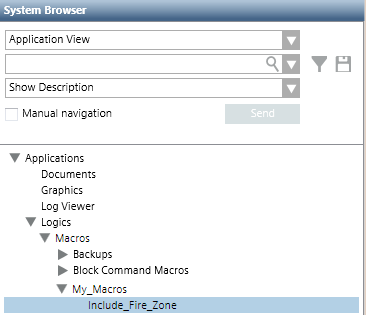

Set Up Macros Subfolders
You can store macros directly in the main Macros folder, or you can create a structure of subfolders under it to organize your macros.
- Select Applications > Logics > Macros or a subfolder under it.
- The Macro tab displays.
- Click New
 .
. - In the New object dialog box, enter a name and description.
- Click OK.
- The new folder is added to System Browser.
- Repeat the preceding steps for any other folders you want to add.
